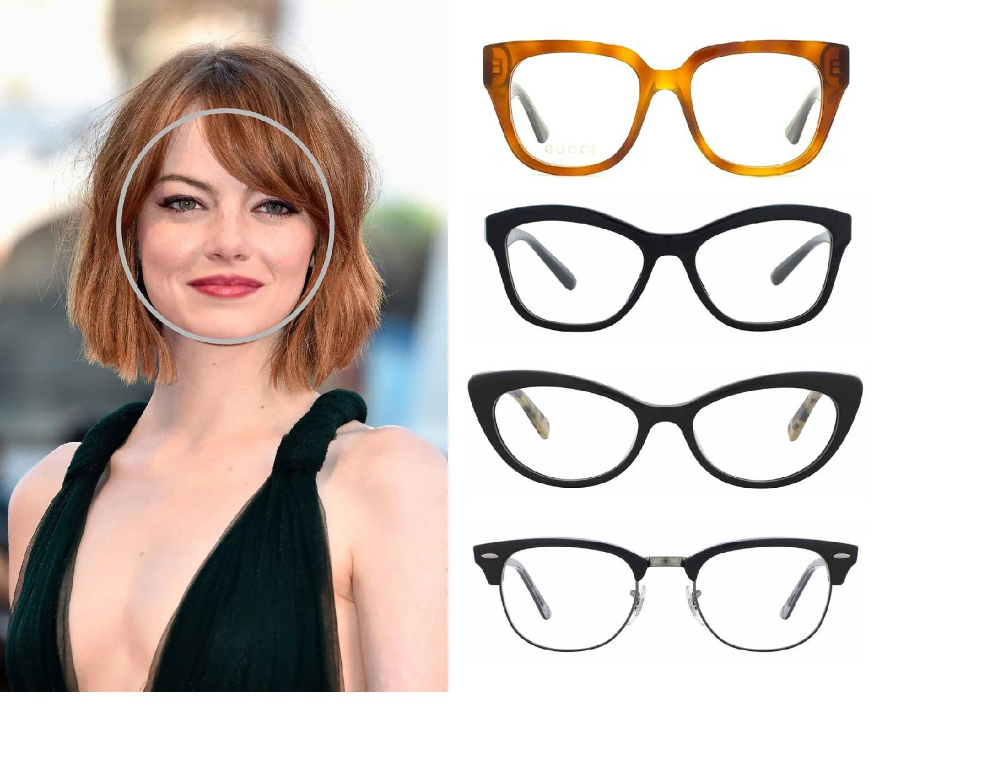
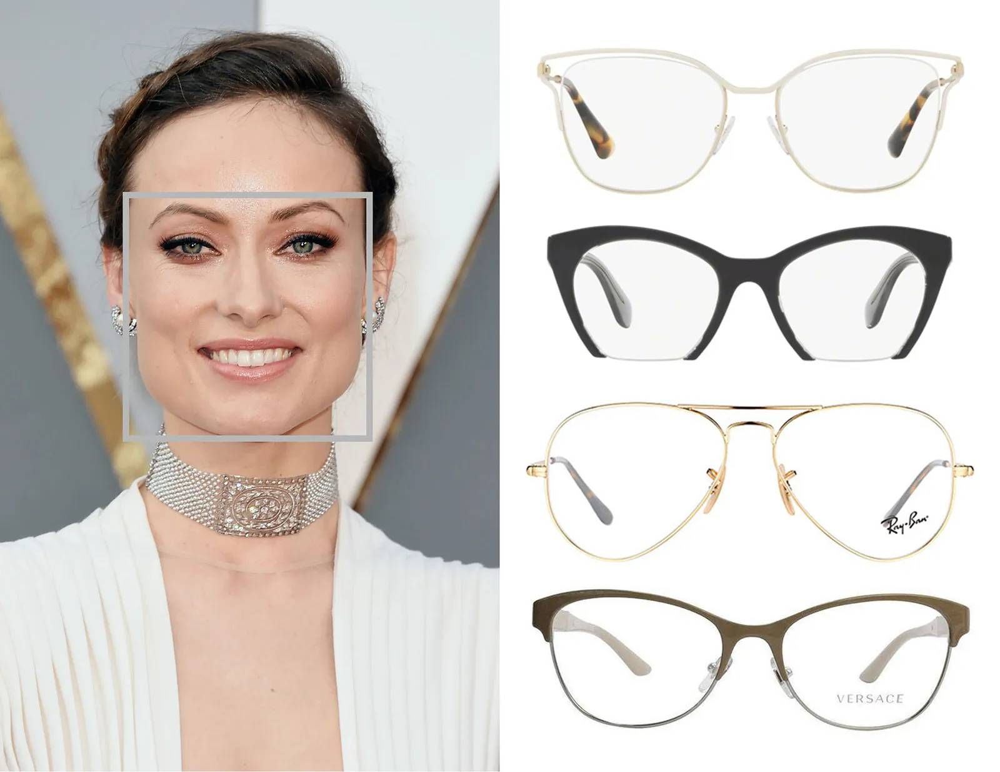
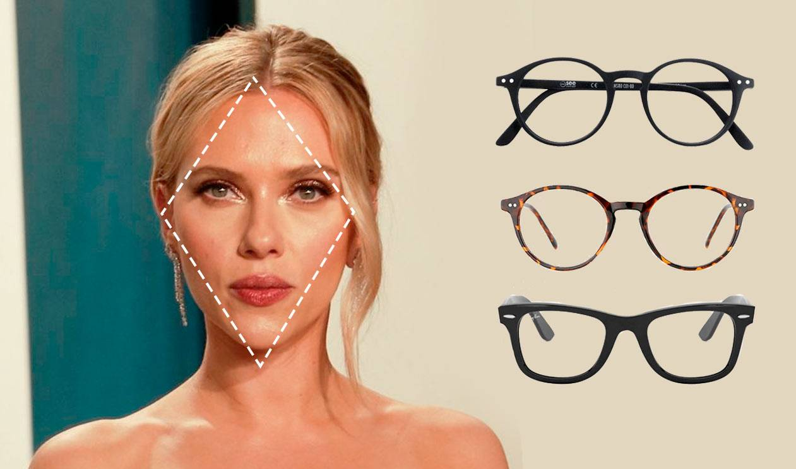
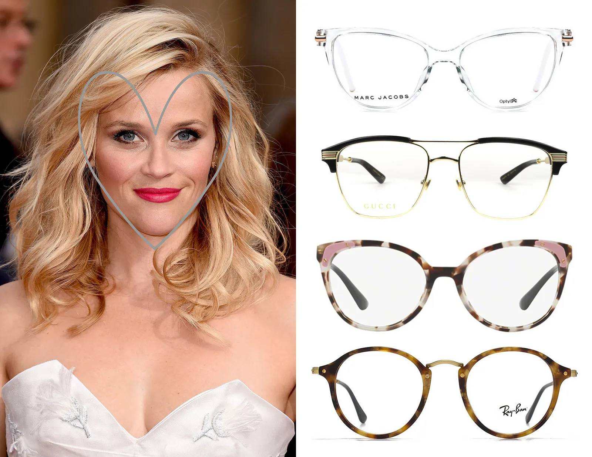

QUE TIPO DE LENTES TE QUEDA
Características:
Frente amplia y barbilla redonda.
Mejillas llenas, líneas suaves y redondeadas.
Recomendaciones: Para el rostro redondo, es crucial elegir monturas que aporten definición y
estructura, alargando visualmente el rostro.
Estilos recomendados:
Gafas cuadradas: Añaden ángulos y contraste.
Gafas rectangulares: Alargan y estilizan el rostro.
Gafas con puente alto: Crean la ilusión de un rostro más largo.

Características:
Mandíbula fuerte y ancha.
Frente y pómulos de igual anchura.
Recomendaciones: Las gafas redondas u ovaladas son ideales para suavizar los ángulos
pronunciados del rostro cuadrado, creando un aspecto más equilibrado.
Estilos recomendados:
Gafas redondas: Suavizan y aportan un toque retro.
Gafas ovaladas: Mantienen el equilibrio entre suavidad y estructura.
Gafas estilo mariposa: Añaden un toque femenino y elegante.

Características:
Frente estrecha y barbilla angosta.
Pómulos anchos y marcados.
Recomendaciones: Las gafas ovaladas o sin montura son ideales para suavizar los
contornos del rostro y equilibrar los pómulos anchos.
Estilos recomendados:
Gafas ovaladas: Suavizan y armonizan el rostro.
Gafas sin montura: Mantienen un aspecto limpio y elegante.
Gafas tipo rectangulares con bordes suaves: Combinan estructura y suavidad.

Características:
Frente ancha y barbilla estrecha.
Pómulos altos y definidos.
Recomendaciones: Para este tipo de rostro, es importante elegir gafas que equilibren la
amplitud de la frente y suavicen la barbilla estrecha.
Estilos recomendados:
Gafas con montura ligera: Proporcionan un equilibrio sutil.
Gafas tipo cat-eye: Añaden un toque sofisticado y elegante.
Gafas sin montura inferior: Suavizan las facciones superiores.
